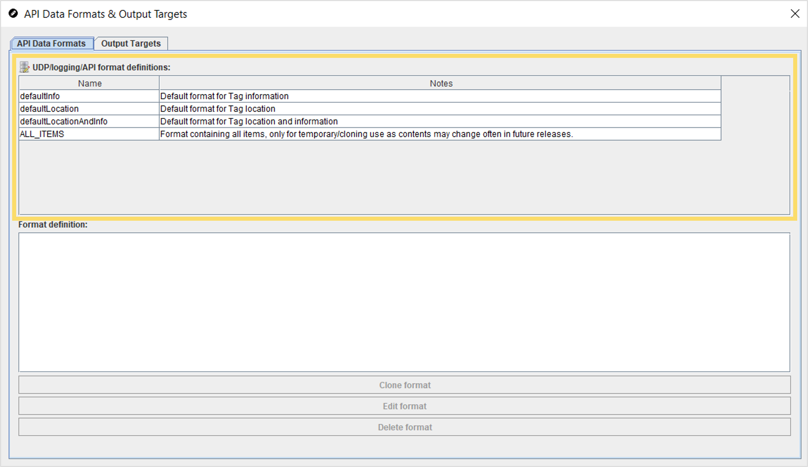
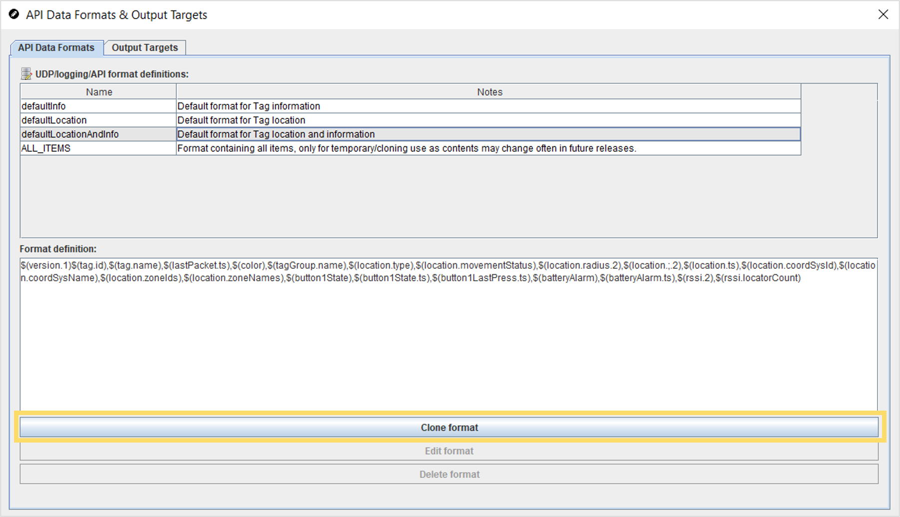
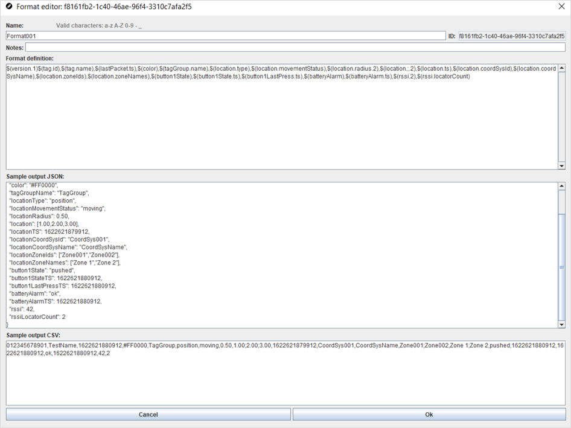
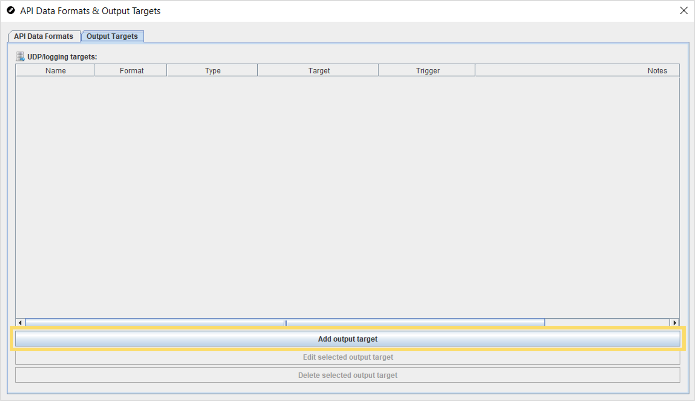
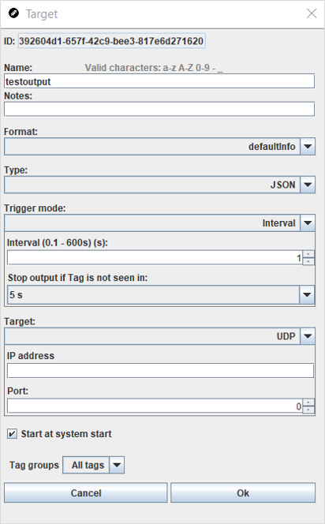

API Data Formats & Output Targets
The API Data Formats & Output Targets editor allows you to edit the data that is exposed for your project via the Quuppa API. The sections below will introduce the different default API data formats that are already available to use, how to edit the formats for the needs of your project as well as how to create output targets.
For more detailed information about using the Quuppa API, please refer to our Quuppa Positioning Engine User Manual or the Quuppa API documentation, available via links in the Quuppa Positioning Engine (QPE) Web Console.
Available API Data Formats
The basic formats available for customisations include:
- DefaultInfo - This format provides all of the API commands for data related to tag information such as tag state, tag group, battery level, button state, acceleration data, TX power, developer specific data. Both JSON and CSV outputs are available. The format is for cases where you only require information about the tags in the project, e.g. an application for monitoring the battery levels and current states of the tags in a project.
- DefaultLocation - This format provides all of the API commands for data related to the positioning information, such as location estimates, the coordinate systems, the tracking areas and zones. Both JSON and CSV outputs are available. The format is for cases where you want to show the positioning information related to the project, e.g. applications that visualise how tags move around a space on a map.
- DefaultLocationAndInfo - This format provides a combination of tag information (e.g. tag states, tag groups, battery level, button state, acceleration data, TX power and developer specific data) and positioning information (e.g. location estimates, coordinate systems, tracking areas and zones). Both JSON and CSV outputs are available. This format is for cases that require both types of data, e.g. applications where tag movements are shown on a map and actions triggered by pressing the tag button are also visualised in the map view.
- ALL_ITEMS - This format provides all of the available Quuppa API commands in the same format. Both JSON and CSV outputs are available. This format is not intended for use as is, but provides all of the possible options to enable format customisations according to the needs of your project.
Edit API Data Formats
The types of data that you want to expose via the Quuppa APIs will depend on the specific requirements of the project that you are working on. The API Data Formats & Output Targets editor enables the use of our default API format definitions (DefaultInfo, DefaultLocation, DefaultLocationAndInfo and ALL_ITEMS) as templates to customise to the needs of your project. JSON and CSV outputs are available for all of the output formats.To edit the format definitions, please follow the steps below:
- Open the project in the QSP.
- In the menu bar at the top, open the Project menu and select API Data Formats (alternatively the editor can be accessed via the object tree on the left by clicking on API Data Formats). This will open the API Data Formats & Output Targets editor to the API Data Formats tab.
- In the UDP/logging/API format definitions table, select the
default definition that you would like to edit. For more information about the
available options, please see the Available Formats section above.

- Copy the default format by clicking on the Clone Format
button under the definitions table. This will open a new format editor window.

Tip: We always recommend cloning the format that you intend to use, even if you don't want to edit the format string, as we are constantly working on improving our API and as such the default formats may change with future software releases. - Give the new format a name and edit the format string as
needed. The window also shows the sample output strings in both JSON and CSV
formats so you can check the output.

- When you are ready, click the OK button at the bottom of the window to save the edits. The customised format and its ID will be made visible in the UDP/logging/API format definitions table.
- Close the UDP/logging/API editor.
Next, you will need to Create Output Targets for where the data from the above defined format definitions is sent.
Create Output Targets
Targets define the destination for where the project data is sent or written. To define targets for your project, follow the steps below:
- Open the project in the QSP.
- In the menu bar at the top, open the Project menu and select Output Targets (alternatively the editor can be accessed via the object tree on the left by clicking on Output Targets). This will open the API Data Formats & Output Targets editor to the Output Targets tab.
- In the editor, click on the Add output target
button.

- In the window that opens, give the target a name and select the settings that
best match your requirements. For more information about the available options,
please see the Target Settings section below.

- Click the OK button once done. The new target will be added to the UDP/logging targets list. You can edit or delete targets as needed by using the buttons under the list.
Target Settings
| Setting | Description | Options |
|---|---|---|
| Format | Select the output format for the target. | DefaultInfo |
| DefaultLocation | ||
| DefaultLocationAndInfo | ||
| custom output format | ||
| Type | Select whether you would like the output in JavaScript object notation (JSON) or Comma-separated values (CSV) form. | JSON |
| CVS | ||
| Trigger mode | Define when updates are triggered. | Interval (i.e. at predefined intervals, in seconds) |
| Any data update (i.e. whenever new data is available) | ||
| Location update (i.e. when new location data is available) | ||
| Target | Select whether data will be sent over UDP or written in a file. | UDP:
|
File:
|
||
| Start at system start | The checkbox allows you to select whether data can be sent automatically from the moment that the system is started, e.g. after a system restarts caused by problems like power failures. | Selected |
| Not selected | ||
| Tag groups | Select whether the target will be defined for all tags, or just for specific tag groups. | All tags |
| Custom |